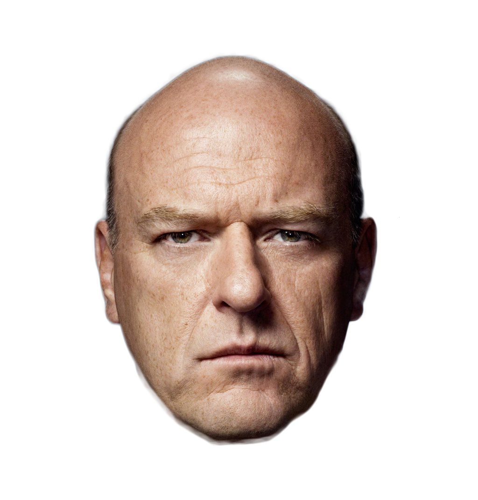

Walter White
Walter White, a high school chemistry teacher and family man, learns he has inoperable lung cancer. To secure his family's financial future, he begins making meth with Jesse Pinkman, a former student. The two become known for their top-quality blue meth, but success has its complications: Walt finds himself in over his head in the drug underworld. Meanwhile, a DEA team led by Walt's brother-in-law, Hank Schrader, begins investigating "Heisenberg," Walt's alter ego.
read more

Jesse Pinkman
Jesse Pinkman is Walt's former student and partner in the meth business. He was never the brightest student, but has grown to be a skilled meth cook in his own right under Walt’s guidance. Jesse initially handled the "street" part of the operation, though his blunders often required Walt's intervention.
read more

Hank Shrader
Hank Schrader is Walt's DEA agent brother-in-law. Over the years, Hank has investigated the source of the high-quality blue meth of "Heisenberg," Walt's underworld alter ego. Hank's heroics killing Tuco Salamanca, Walt's distributor, earn him a promotion and a part-time assignment at the DEA's El Paso office, but also leave him enduring debilitating anxiety attacks. These attacks increase in intensity after Cartel members ambush Hank and other agents on the Mexican border.
read more